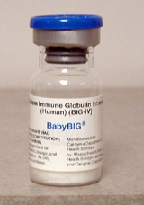

What is BabyBIG®?
 |
BabyBIG®, 全称肉毒杆菌免疫球蛋白静脉注射，是一种含有人源抗肉毒杆菌毒素抗体的孤儿药 ，并且该药物已被美国食品与药物管理局批准允许用于A型和B型婴儿肉毒症的治疗。
该产品是一种经表面活性溶剂处理、无菌、冻干的免疫球蛋白G（IgG）粉末，加以5%蔗糖和1%白蛋白（人源）作为稳定剂。产品不含防腐剂。纯化的免疫球蛋白来源于成人混合血浆。所有捐献者都接受过A型和B型重组肉毒杆菌疫苗（rBV A/B）接种，且体内产生高滴度的A型和B型肉毒神经毒素中和抗体。另外，所有捐献者都经过检测确认艾滋、乙肝和丙肝病毒抗体检测阴性。混合血浆的蛋白质经Cohn/Oncley低温乙醇沉淀法分离，改性成此静脉给药产品。 至今，BabyBIG®已被用来治疗超过2100例美国婴儿肉毒症患者并且已累计节约123年的住院时间以及1.53亿美元的住院费用。 更进一步的了解，可咨询下列链接：
|